ESP32-CAM入门教程
1.材料
Arduino
ESP32-CAM
下载模块（接上USB就能用，很方便，如果没有买就只有资金用USB-TTL了）
如下图
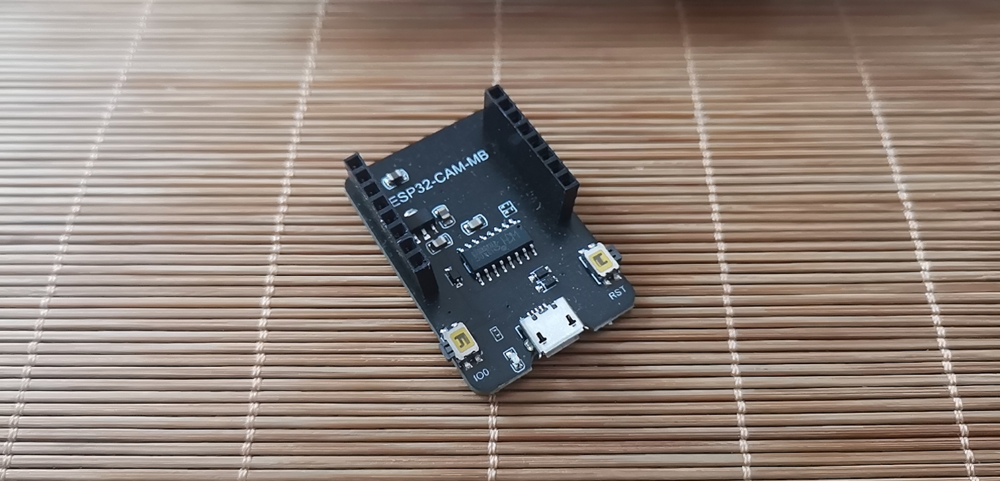
两个合在一起如下图
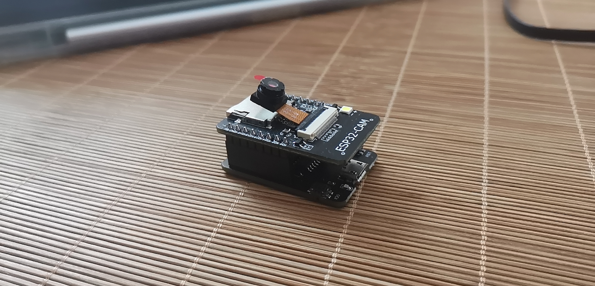
2.Arduino+ESP32开发环境搭建
官网下载Arduino https://www.arduino.cc/en/software (建议不要下载beta 版，可能会有问题）
如果官网太慢可以在这里下载Arduino中文社区 - Powered by Discuz!）
安装ESP32开发包，文件-> 首选项->附加开发板管理器 输入 https://dl.espressif.com/dl/package_esp32_index.json

然后重启Arduino，工具-> 开发板->开发板管理器，搜索ESP32下载（如下图）
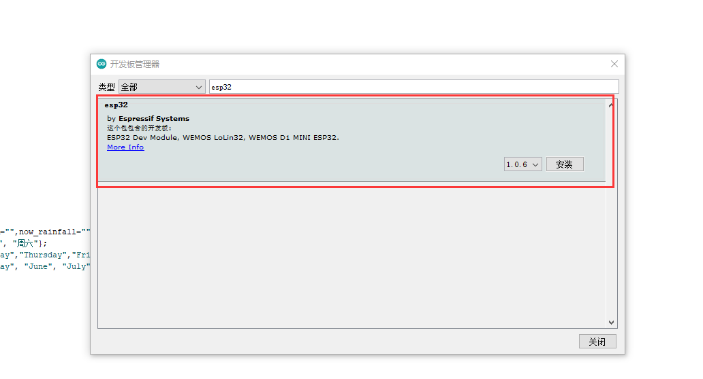
到这里环境就配置好了
3.烧录程序
1.准备
1.将esp32-cam与电脑连接，如果连接成功会如下图所示
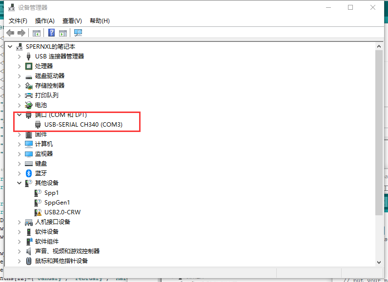
如果没有连接上可能是USB线没有数据传输功能
2.工具->开发板 选择AI Thinker ESP32-CAM的开发板
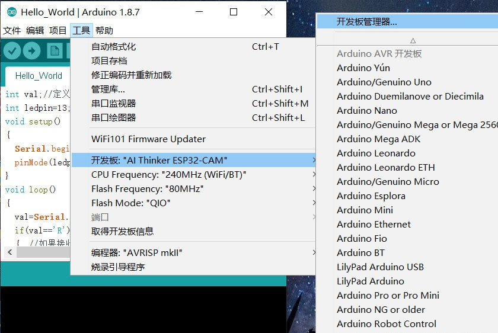
3.将你的设备的端口打上勾
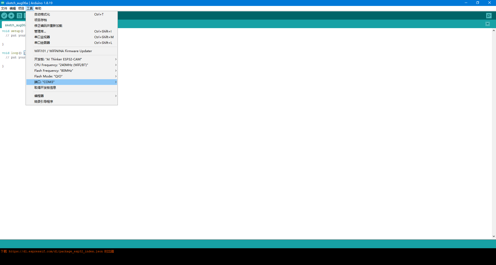
2.验证
1.打开文件官方示例：ChipID，获取开发板芯片ID号。
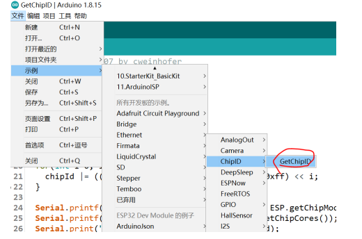
2.点击烧录按钮
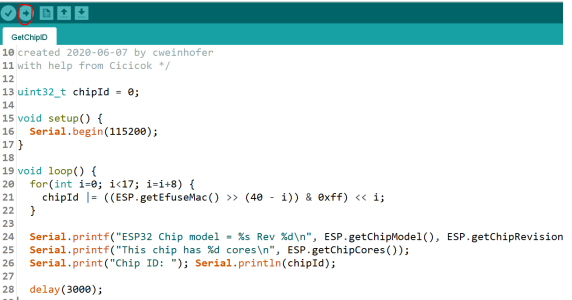
3.烧录成功后，点击右上角串口监视器，可以看到ESP32芯片的ID号。证明环境搭建成功！
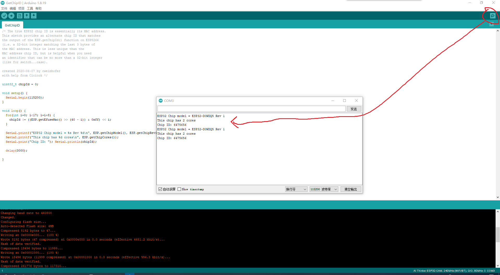
3.使用esp32-cam示例
在Arduino中打开文件–>示例–> ESP32 –>Camera–>CameraWebServer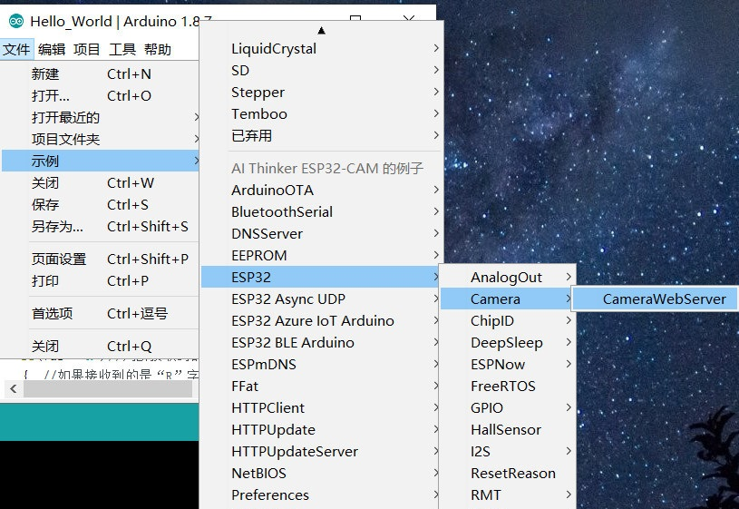
（1）将你所需要使用的模型取消注释，不需要的全部注释（这里我选择的是 CAMERA_MODEL_AI_THINKER）
（2）在ssid和password中设置你所要连接的WiFi名称和密码。1
2
3
4
5
6
7
8
9
10
11
12
13
14// Select camera model
//#define CAMERA_MODEL_WROVER_KIT // Has PSRAM
//#define CAMERA_MODEL_ESP_EYE // Has PSRAM
//#define CAMERA_MODEL_M5STACK_PSRAM // Has PSRAM
//#define CAMERA_MODEL_M5STACK_V2_PSRAM // M5Camera version B Has PSRAM
//#define CAMERA_MODEL_M5STACK_WIDE // Has PSRAM
//#define CAMERA_MODEL_M5STACK_ESP32CAM // No PSRAM
#define CAMERA_MODEL_AI_THINKER // Has PSRAM
//#define CAMERA_MODEL_TTGO_T_JOURNAL // No PSRAM
#include "camera_pins.h"
const char* ssid = "*********";
const char* password = "*********";设置好以后点击烧录
烧录成功后，点击右上角的串口监听器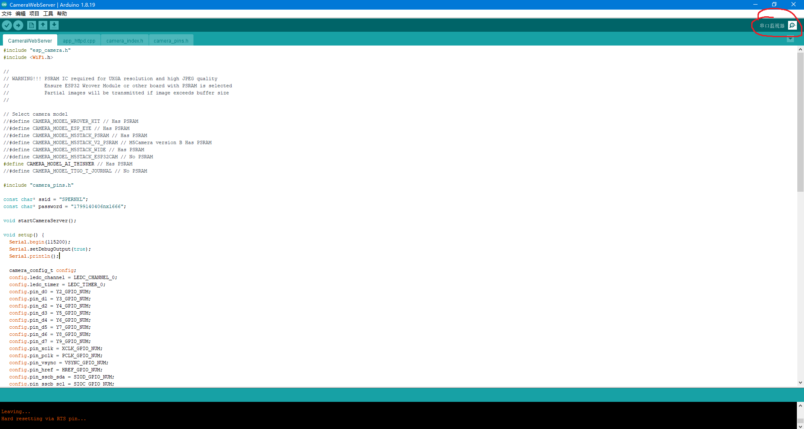
以波特率115200打开串行监视器并按ESP32-CAM板上复位键。会弹出如下窗口。（我的上面有一些文字乱码，但是不影响使用）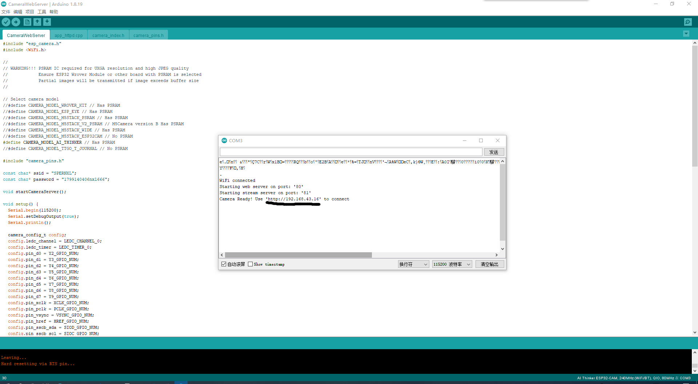
我们将监视器中的显示IP地址复制到浏览器打开就可以通过局域网来使用ESP32-CAM了（也就是我画横线的地方）
点击Start Stream就可以看到ESP32-CAM实时传过来的画面。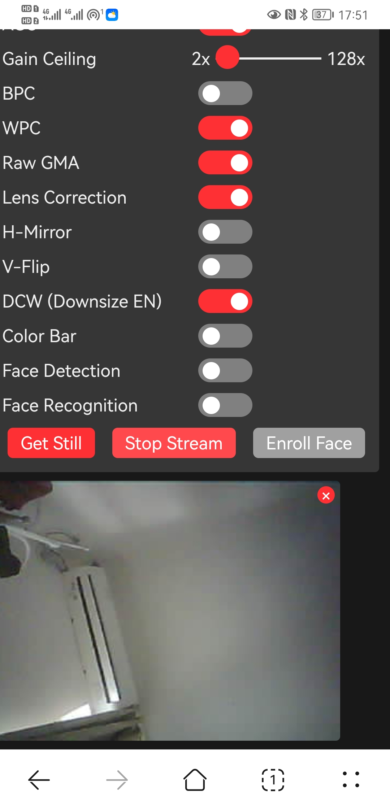